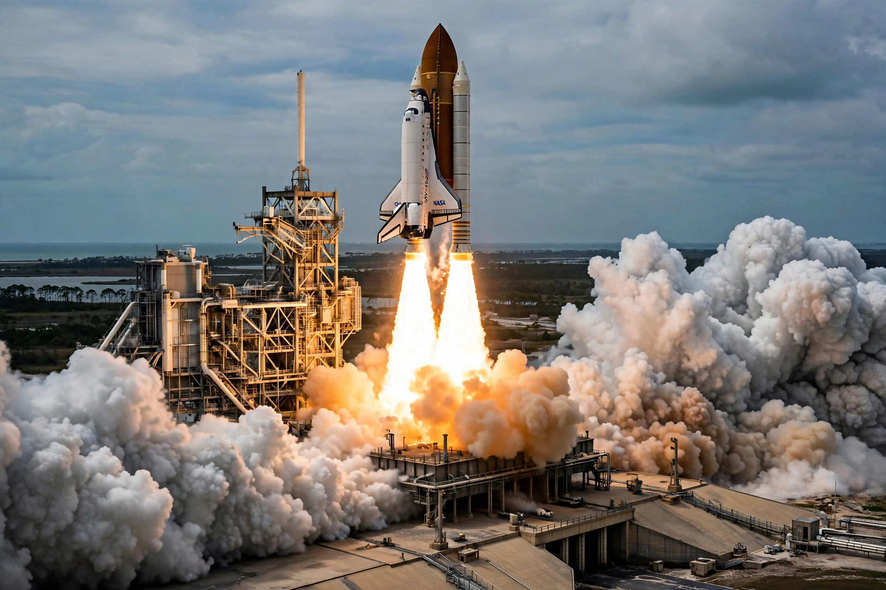

Space Shuttle
From Wikipedia, the free encyclopedia

A shuttle launch from Kennedy Space Center.NASA\'s Space Shuttle was the first reusable crewed spacecraft, a partially reusable low-Earth-orbit system operated from 1981 to 2011. Each vehicle comprised a winged orbiter with three main engines, an external fuel tank and two solid rocket boosters. Five orbiters (Columbia, Challenger, Discovery, Atlantis, Endeavour) flew 135 missions — deploying satellites, servicing Hubble, and assembling the International Space Station — while two, Challenger (1986) and Columbia (2003), were lost with their crews.
Development and design
Approved in 1972 as a cheaper, reusable successor to Apollo, the shuttle compromised among NASA, military and budget demands. The orbiter\'s 24,400 ceramic tiles and reinforced carbon-carbon wing edges formed its heat shield; the orange external tank was the only major expendable element.
Operations
Launches from Kennedy Space Center deployed payloads from communications satellites to the Hubble Space Telescope (whose mirror flaw shuttle astronauts famously repaired in 1993), flew Spacelab and Spacehab science missions, docked with Russia\'s Mir, and built the ISS between 1998 and 2011.
Accidents and retirement
Challenger broke apart 73 seconds after launch in 1986 when an O-ring failed in cold weather; Columbia disintegrated on re-entry in 2003 after foam damaged its wing. Both investigations criticised NASA\'s safety culture. The fleet retired in 2011; orbiters went to museums, and US crewed flight resumed via SpaceX Crew Dragon in 2020.